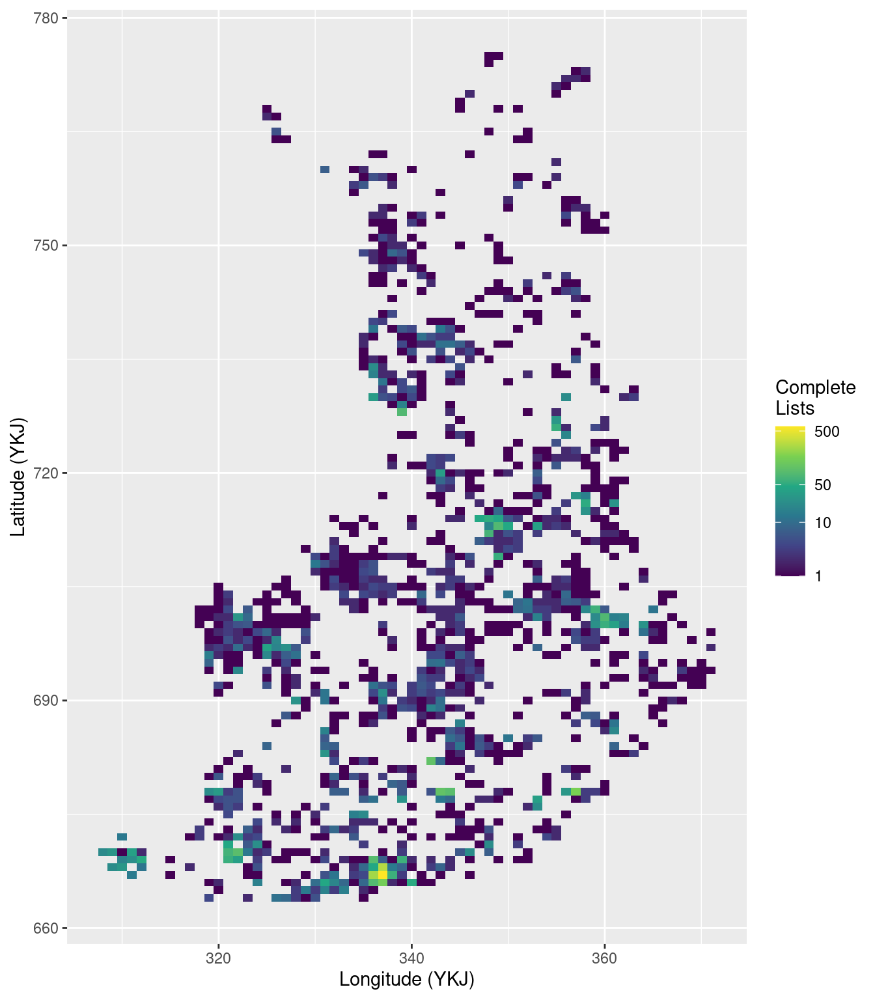

Code
library(finbif, quietly = TRUE)
library(ggplot2, quietly = TRUE)
library(plotly, quietly = TRUE)Load packages
library(finbif, quietly = TRUE)
library(ggplot2, quietly = TRUE)
library(plotly, quietly = TRUE)Set filters for complete lists of birds only.
filters <- list(
complete_list_type = c(
"MY.completeListTypeCompleteWithBreedingStatus",
"MY.completeListTypeComplete"
),
complete_list_taxon_id = "MX.37580"
)Get the number of complete lists per 10km grid cell.
complete_lists_per_grid_cell <- fb_occurrence(
filter = filters,
select = c("lon_10_ykj", "lat_10_ykj", "year"),
aggregate = "event",
n = "all",
quiet = TRUE
)Plot the number of complete lists per grid cell.
ggplot(complete_lists_per_grid_cell) +
aes(lon_10_ykj, lat_10_ykj, fill = n_events) +
scale_fill_viridis_c(
name = "Complete\nLists", trans = 'log', breaks = c(1, 10, 50, 500),
) +
geom_tile() +
xlab("Longitude (YKJ)") +
ylab("Latitude (YKJ)")
Get the observed breeding taxa
taxa <- fb_occurrence(
"Birds",
filter = filters,
select = c(Taxa = "birdlife_code"),
aggregate = "records",
aggregate_counts = FALSE,
n = "all",
quiet = TRUE
)Get the number of complete lists per week removing lists that end in a different week than they began in.
complete_lists_per_week <-
fb_occurrence(
filter = filters,
select = c("date_start", "date_end", "year"),
aggregate = "event",
n = "all",
quiet = TRUE
) |>
transform(
week = format(as.Date(date_start), "%W"),
end_week = format(as.Date(date_end), "%W")
) |>
subset(week == end_week) |>
aggregate(n_events ~ week + year, data = _, sum)Get the weekly reporting rate for each taxa.
reporting_rates <-
fb_occurrence(
"Birds",
filter = filters,
select = c("date_start", "date_end", Taxa = "birdlife_code", "year"),
aggregate = "records",
n = "all",
quiet = TRUE
) |>
transform(
week = format(as.Date(date_start), "%W"),
end_week = format(as.Date(date_end), "%W")
) |>
subset(week == end_week) |>
aggregate(n_records ~ week + Taxa + year, data = _, sum) |>
merge(merge(complete_lists_per_week, taxa), all.y = TRUE) |>
transform(n_records = replace(n_records, is.na(n_records), 0)) |>
transform(reporting_rate = n_records / n_events)Plot reporting rate changes over time for Cygnus cygnus.
reporting_rate_plot <-
ggplot(reporting_rates) +
aes(
as.Date(paste(year, week, 1), format = "%Y %W %u"),
reporting_rate,
col = Taxa
) +
scale_color_grey(start = 0, end = 0) +
geom_line() +
xlab("Date") +
ylab("Reporting rate")
ggplotly(reporting_rate_plot, tooltip = "colour", dynamicTicks = TRUE)